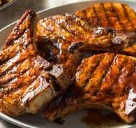

Porkchops

------------------
Porkchops are a versatile and flavorful culinary piece. On this page, we'll talk about how to make my absolute favorite way to cook them.
This recipe will only cover porkchops as a main dish. If you'd like to see options for sides, navigate to the "sides" page and find one that looks tasty!
Porkchop Ingredients
- Porkchops, obviously
- Half a stick of butter
- Olive Oil
- Salt and Pepper
- Chili Powder
- Bunches of Thyme, as a garnish
Instructions
Let's get started!
- Firstly, its a smart idea to use some shears to cut slits in the fat of the porkchops. This will prevent them from curling as they cook.
- Mix some salt, pepper, and chili powder together until a complete mixure. Measure with your heart!
- Season both sides of your porkchops with the seasoning mixure.
- Heat a pan opn a medium heat. Once the pan is warm, add a swirl of oil and your butter.
- Allow the butter and oil to coat the bottom of the pan, then add your porkchops. Be sure to move them around on the pan to prevent them sticking!
- Add in a few bunches of thyme to the pan.
- While the chops are cooking, baste them with a spoon to help bring the center to temperature
- Once the middle of the chops reaches 160 degrees, they're complete. Take them off the heat and let them rest
That's it! This method of cooking porkchops is my favorite, as the basting makes them super moist and tender. It's also stupidly easy!
Home